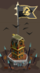
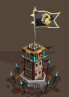
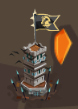

Tour du culte
Présentation
Equivalent des fieffé coquin au royaaume du glacier éternel, ils sont disposés partout. Commence vers le lvl 45 et 71 maximum. Le principe est le même : après une ou plusieurs attaque(s), le niveau augmente comme le butin.
A partir du niveau 70 (joueur) une ressource s'ajoute au butin classique (bois-pierre-bouffe) : le verre.
Apparence
3 apparences sucessives, en fonction du niveau :
AU début (lvl 20) 
Dès le lvl 54 environ 
lvl 62-max : 
Attaque
Attaquer une tour du culte peut répondre à plusieurs objectifs :
- quêtes rénégats de la fournaise
- piller des ressources
- trouver de l'équipement
- gagner des ruru
- Monter les tours pour plus de pillge
Rénégats de la fournaise
Equivalent du personnage "chevaliers errants" au grand empire, il possède un petit stand (tente) dont l'apparence ressemble au camp de l'espion. Le principe est le suivant :
- attaquer des tours du culte
- certaines tours permettent de trouver des morceaux de cartes
- lorsque la carte est complètes, les rénégats des glaces sont libérés
- en récompense 80 mêlée et 80 distance
Les ruru
Attaquer des tours du culte (comme les tours du désert ou des pics) permet (parfois) de gnagner 7 à 15 ruru/attaque.
Pillage
Pour gagner un max de pièces, il est conseillé d'avoir le personnage du maraudeur.
Ainsi, avec une tour du culte au max (lvl. 71) c'est 50,8k pièces/attaque.
Monter les tours du culte proches de votre cp aux pics est un bon moyen de gagner des pièces (c'est aussi vrai pour les sables et le glacier).
En pratique